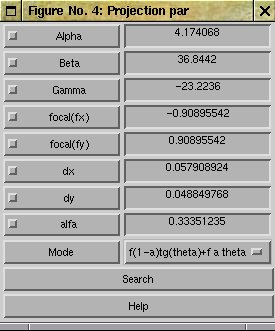

Starcal
1 Introduction and overview
Starcal is a (matlab)-program for determination
of camera rotations and
camera characteristics. Geometrical
camera calibration is of vital importance for more advanced
image analysis such as tomographic inversion, stereoscopic
triangulation. For these and other methods it is necessary to
accurately know the pixel line-of-sight of each and every image
pixel. With the STARCAL function this camera calibration is
performed by identifying stars in images and comparing their
position with the calculated star positions. In this way both
the camera rotation and the camera model can be determined with
high accuracy.
The PhD thesis
Three dimensional imaging of aurora and airglow
contains a chapter that gives a more in depth description of
this method:
Geometrical calibration of ALIS.
This document is a step by step how to do instruction. For help with installing please read INSTALL-GUIDE.
2 Working procedure.
- Load an image
where it is possible to identify at least some 15 stars. If
the sensitivity is to low or the noise-level to high it have
been found that even images from really low-performing
web-cams can be used in "differential mode" where
the difference between two images taken a few minutes apart
have been used - in this way the "fixed pattern
noise" canceled out.
Accepted image formats: FITS and other raw-data image formats that has reader-functions in the Fits_tools directory, all image formats that your version of MATLAB reads.
To make the geometrical calibration possible the accurate position of the stars in the ske has to be calculated. In order to do so both the time of observation (date, UTC time) and location (latitude, longitude) has to be known. If an image file in a standard format is used, without any special meta-data extraction provided the image reading function will query for this information. The meta-data "production" can be automated in various ways, see below. If you have an image in fits format that contains some additional keywords that give information on observation site, date and time of exposure and general viewing direction of the camera this will be read and used. Provided they comply with this (Or any other identifiable ALIS) key-word formats... Otherwise you can write a small function that returns a struct with the required meta data according to one of the two calling formats inimg.m expects, short of that you might still be prompted for the necessary, and some helpful information.
To take control over the sometimes important and often necessary image preprocessing proceed like this when loading the image:PO = typical_pre_proc_ops PO = quadfix: 2 quadfixsize: 0 replaceborder: 1 badpixfix: 1 outimgsize: 0 medianfilter: 3 defaultccd6: 1 bias_correction: 1 imreg: [] C_cam: [] remove_these_stars: [] optpar: [] size_r_t_s: 2 v_interf_notches: [] psf: [] ffc: [] fix_missalign: 1 verb: 0 interference_level: Inf interference_method: 'flat' interference_swf: 3 img_histeq: 0 hist_crop: 0 try_to_be_smart_fnc: '' find_optpar: 1 SkMp = starcal(PO);For the details about the pre-process-options see the typical_pre_proc_ops.m documentation. - Image display
 The image is displayed ( fig. 1 ) with the stars overlaid.
The image positions of the stars are calculated with the
initial guess of the camera rotations and optical
characteristics. The star catalog that are included by default
are the Yale Bright Star
catalog with stars down to magnitudes between 5.5 and
6. For more information on the star catalog and the ephemeris
calculations: Skymap
The image is displayed ( fig. 1 ) with the stars overlaid.
The image positions of the stars are calculated with the
initial guess of the camera rotations and optical
characteristics. The star catalog that are included by default
are the Yale Bright Star
catalog with stars down to magnitudes between 5.5 and
6. For more information on the star catalog and the ephemeris
calculations: Skymap
With slide rulers/scroll bars at the bottom (1) and to the left (2) you change the east-west and north-south rotation of the camera. With the pop-up-menu (3) you change the magnitude of the faintest stars to overlay. With the upper slide-ruler (4) you change the focal length of the camera/field-of-view. And finally with the right slide ruler (5) you change the camera rotation around the optical axis.
To make the stars appear clearly above the background it is preferably to set matlab's colormap to something that works better than the default (jet), personally I prefer:colormap(bone) % For list of colormaps see help graph3d
since this gives the ALIS images an appearance not to far away from the night sky, which helps the eye tremendously. Further it is sometimes necessary to manually set the limits of the color scale, in matlab this is done with these commands:
caxis % without argument this give the current color-axis-limits ans = 55.5 33247 caxis([60 3500]) % To get a good caxis try stepwise. - Recognition
The key step is of course to recognize the stars in the
image, once a constellation or a group of stars are recognized
what remains is more or less mechanical work. Provided the
initial guess of the rotation and the field-of-view of the
camera is good this should be easy. Otherwise you could
increase the camera field-of-view to get more stars projected
down to the image plate, this should help if the initial guess
of the rotations were off. If you realize that the stars and
the image are reflected you should just change the sign of the
corresponding focal width. If you need to mirror the star-field
around the vertical axis, change the sign of
:
SkMp.optpar(1) = -SkMp.optpar(1);
The optical parameter corresponding to the vertical focal width () is SkMp.optpar(2).
This can also be done with the "Flip" pop-up menu in the top right corner. - It's EASY...
If you have a good image with many clearly visible stars,
and you know the optical transfer function function of your
camera; then it should be possible to get a
fairly good fit between the
images and the starfield, and for cases like that there
is a chance that the "auto-calibration" will work. You find
that as the last item in the "StarCal" menu.
This function searches for "starlike" local maxima in the image and the tries to associate those with the brightness stars from the catalog that are in the f-o-v and then search for the optical parameters. For the case referenced above the result was so-so, the function made a good fit but only accepted 9 stars in the image.- This auto-calibration might turn out better if some image pre-processing is done, possibly by median-filtering the image (Set PO.medianfilter = 3) or by applying a wiener filter (Set PO.medianfilter = -3). The functionality is tested and various parameters are selected that works for ALIS images (16 bits per pixel and typical point spread of stars < 1 pixel), selected but hard-coded...
img = SkMp.img - medfilt2(SkMp.img,[61 61]); img = wiener2(img,[3 3]); SkMp.img = img;
The first step makes a fairly hard background reduction effectively reducing the large scale variations in the image. The resulting image is kind of noisy which we reduce in the second step. The final step is just to put the image back in the SkMp structure. - ...but it's not enough
To get a good fit over the entire image plate it is sometimes
necessary to identify images over the entire image plate, this
is mostly the case for cameras with larger f-o-v's such as
those used in the
ALIS
cameras with
f-o-v. Then it is necessary to do manual star
identification.
This works in the following steps:- Optionally zoom in, click-and-drag, on a region where you recognize the stars.
- Magnification
From the "StarCal" menu select "Magnify". Select a star by centering the cross-hair on the star and left-click. In the small zoom figure a narrower region surrounding the star is displayed. The size of the magnified region can be selected in the "preferences" menu item. - In the zoom window it should now appear a magnification of the region around the star. If necessary move the center of the display to cover the star well.
-
Determination of star position.
Either choose "autopick" or "man.pick" from the "star" menu. autopick give you a cross-hair to select the center of the star and then fits a 2-dimensional Gaussian to the magnified image region. If this procedure are to slow or gives an unsatisfactory result, which occurs if the star is close to the noise level, you should revert to man.pick which gives you a cross-hair marker to select the center of the star, this time with fixed widths. The resulting fits are presented as 2 contour plots the only important thing is that the center of the Gaussian is well aligned with the center of the star, if not you should repeat the procedure. -
Identification.
Now when You have recognized a star and determined its position in the image it is time to identify ( connect ) the star in the image with a star in the star chart/star catalog. Select "identify" from the "StarCal" menu. A cross-hair appears in the sky-view window. Center the cursor on the selected star marker and press a button. A marker will appear around the star closest to the point of selection. Over the plot a text (Retry (l)| Quit (m)| Accept(r)) will appear that tell You which action is connected to each mouse-button. If the correct star is encircled press the button corresponding to accept, if wrong star is encircled press the button corresponding to retry, if You get second thoughts and become uncertain which star should be encircled press the button corresponding to skip.
-
Repetitive and laborious work
repeat the above steps until You have found 15-25 stars in the image. The stars should preferably be evenly distributed over the image to provide a good match over the entire field of view. This is important to get a good determination of the pixel lines-of sight over the entire image plate and in the subsequent step when the semi-automated star search is applied.
- Determination of camera rotation and optical parameters
Once you've identified a reasonable number of stars, as many
as possible or some 25-30, evenly distributed over the image
it is due time to determine an optimal set of rotations and
optical parameters. In order to do so select "Search Optpar"
in the "StarCal" menu. This will bring up this figure:
 Where the optical parameters to search for are presented- Alpha - Eulerian rotation angle.
- Beta - Eulerian rotation angle.
- Gamma - Eulerian rotation angle.
- focal(fu) - focal width in the horizontal (u) direction in the image plane
- focal(fv) - focal width in the vertical (v) direction in the image plane
- du - Shift of projection of the optical axis (hor) from image centre.
- dv - Shift of projection of the optical axis (ver) from image centre.
- alpha - Shape parameter for optical transfer models 2, 3, 5, 9, 11
-
Mode - optical transfer function characteristics:
1 - pinhole camera model
2 - Sin-group camera models
3 - ALIS camera model
4 - Simple model
5 - Tan-group camera models
6 - Hard-coded Allsky-camera model (polynomial in theta)
7 - non-parametric camera model built with surface interpolants between image coordinates and line-of-sight vector components
8 - 2nd non-parametric camera model built with surface interpolants between image coordinates and line-of-sight vector components
9 (11) ASK-camera model.
If it has not been possible to identify more than a few (4-8) stars it could be worthwhile to "lock" a few of the free parameters, this is to avoid a strange optical characteristics that might occur if the number of free parameters are close to the number of well-known data values "equations". This you do by pushing the check-box for the free parameters. Typically du and dv (the shift of the image projection of the optical axis from the middle of the image) could be fixed to 0, and likewise the focal width of the camera might be well known, then the only remaining free parameters should be the three camera rotations.
To start the search push "Search". - Search for more stars
When the automatic optimization is done and the result looks good chose
"semi-autoidentify" from the "StarCal" menu. This procedure
will map all stars within the camera field-of-view to the
image with the given rotations and optical parameters. This is
done from the brightest stars to the faintest.
 When a star are
found to be in the image the display in the zoom window will
be centered around that point. 2 contour plots will appear and
if there are good overlapping choose accept by pushing the
mouse button corresponding to accept...
When a star are
found to be in the image the display in the zoom window will
be centered around that point. 2 contour plots will appear and
if there are good overlapping choose accept by pushing the
mouse button corresponding to accept...
If the matching is poor then double press the mouse button corresponding to retry then a repeated fit of a 2D Gaussian to the surroundings of the star is made if the fit still is poor repeat the "retries". After a few trials with the automatic and flexible fitting it will be replaced by first a wide circular Gaussian and finally with a narrow Gaussian. When the fit is acceptable chose "accept". If no star is found or what could be a star appear to have a fairly faint intensity over the image background ( As is seen in the extra window that appears ) chose skip. It is also possible that the star is outside the initially calculated region, especially when the stars initially found by hand is poorly distributed in the image. Then it is possible to walk around a little to see if any star is found in the near vicinity. The extra window contain line plots of the current region of the image ( in dark blue ) and the 2D Gaussian ( in green ) and the region of the image in which the 2D Gaussian is larger than 10 % of its maximum is plotted in red. The dotted bright blue and the yellow lines are the supposed +/-noise level.
- Final optimization Repeat the search for/optimization of the optical parameters as described above.
- Check of results After a successful calibration the results should be pleasing to watch. There should be no large systematic errors anywhere, and if there are some large errors it should be possible to account them to miss-identification of a star. This is the case for this plot of "error arrows" where the long arrow from approximately (220, 220) is due to that. The overall spread of the residuals should be within a pixel which often is the case.
- Save the work
Before quitting the star-identification work you should save at least the
variable SkMp.optpar to file. To do this you either choose "Save
optpar" from the "StarCal" menu or do:
save myfilename.opt SkMp.optpar -ascii
In the first case you save the optical parameters in the .acc format otherwise in the raw optpar format.
{kind=link}
{kind=link}
{kind=link}
{kind=link}
{kind=link}
{kind=link}
{kind=link}
{kind=link}
With this task done you can utilize the very good knowledge about the orientation and optical transfer in further image analysis such as stereoscopic triangulation, wind-field determination and various mappings of the images.